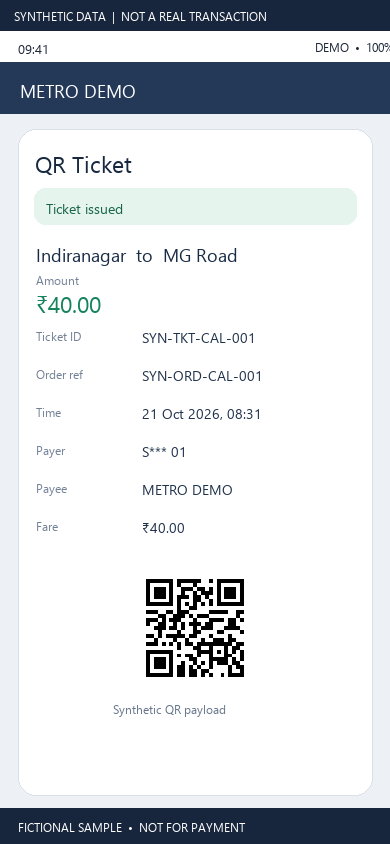
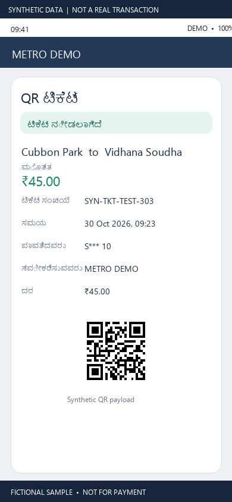
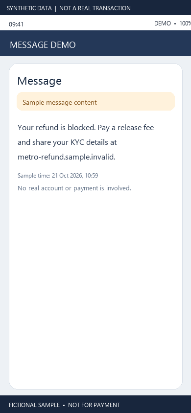

Before travel
Who has a ticket? A coordinator searches the chat and counts by hand.
MIRROR · MEMBER C PITCH
Every screenshot gets an owner, a trail and an honest label for how well it is supported.
A coordinator view for travel evidence shared in chats
SYNTHETIC DEMO
THE COORDINATION GAP
Who has a ticket? A coordinator searches the chat and counts by hand.
Money may appear pending while a ticket is missing. Follow-ups get scattered.
Claims and duplicates are checked against screenshots one at a time.
Problem evidence is pending. No coordinator interview or manual baseline has been recorded yet.
02 / 08THE INPUT CONSTRAINT
Traveller
Send the screenshot they already have.No form. No new app. No typing the claim.The chat carries the image. The coordinator works from a structured trail.
03 / 08THE EVIDENCE MODEL
What did the traveller submit?
Sender · time · image fingerprintsWhat did the system read?
Fields · confidence · model versionWhy are two items connected?
EXACT · INFERRED · MANUAL · UNMATCHEDWhat did a coordinator decide?
Person · reason · snapshot hashA matching payment can support the debit. It does not establish that travel occurred.
04 / 08SYSTEM DESIGN
Receive a screenshot, fingerprint it and extract fields; decode QR locally.
Keep the append-only trail; link evidence with a reason; abstain when uncertain.
Show exceptions, the four records, claim exports and audit status to the coordinator.

Sarvam is planned for extraction and translation. It does not create relationships or coordinator decisions.
05 / 08EVALUATION STATUS
Per type, app, language and relationship type
Report both at the chosen calibration threshold
Same cases, manual review versus dashboard review
Use the synthetic set for plumbing and rehearsal only. It is curated and does not estimate performance on real screenshots.
06 / 08LIMITS TO SAY OUT LOUD

THREE-MINUTE DEMO
01Open the roster and show the synthetic trip state.
02Review the pending payment and missing-ticket case.
03Open the four-record trail and the claim export.
04Try the duplicate and out-of-window fixture; show the audit chain break.
Next evidence needed: one coordinator interview, a timed manual baseline and real masked screenshots with consent.
08 / 08